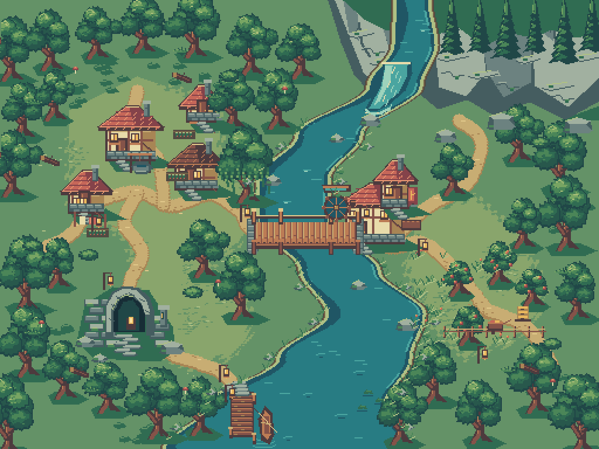
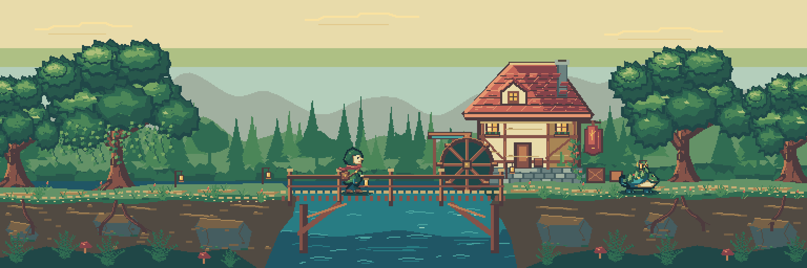
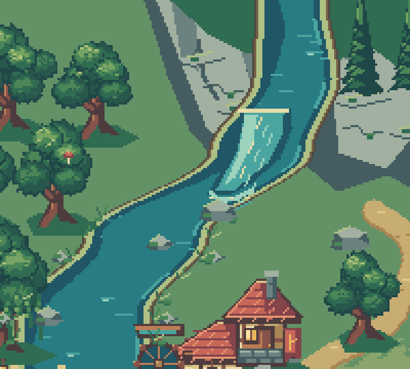
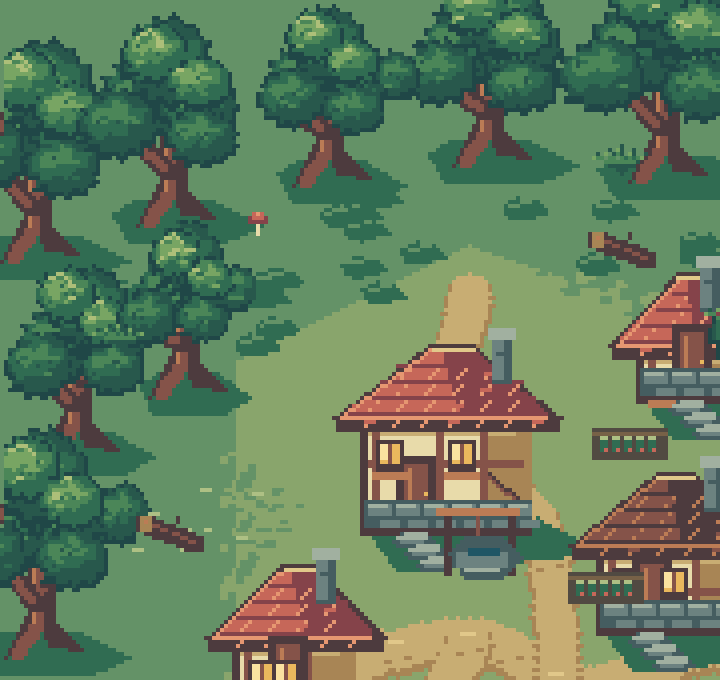
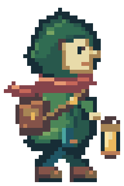
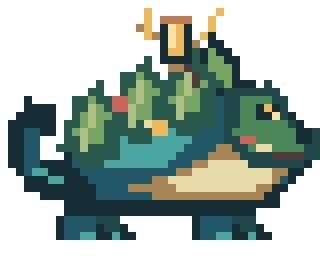
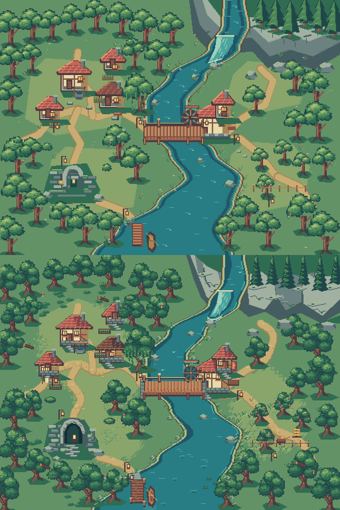
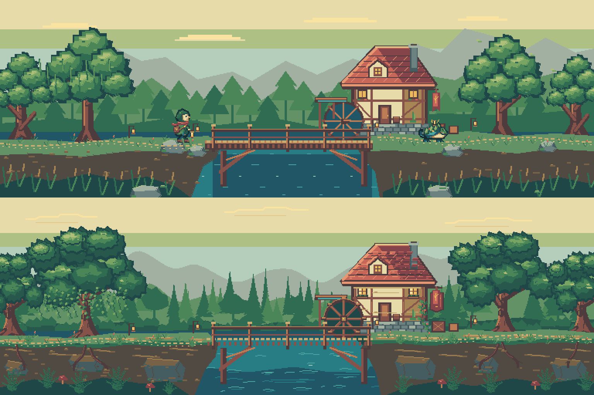

The Lantern River
A 32-color woodland valley made entirely with PixelWall commands and editable pixels. This art direction edition adds richer scenery, turning waterwheels, and a layered character composition. No image generation was used.
Overworld hero

Lantern Ford

Animated overworld
Lantern Ford in motion
Details and crops




Before and after


Editable projects and reproduction
OverworldLantern FordMiraReedlingEditable character compositionReproduction instructionsVerification and limitations
PixelWall supplies editable pixels, layers, frames, clips, and PNG exports. The separate viewer supplies movement, camera follow, and parallax. These MP4s are encoded artwork loops, not editor screen recordings. The revised edition was verified with the CLI; desktop MCP remains blocked by unresolved connection errors, and the earlier library-save failure remains FAIL. These visuals are ready for marketing review; no “AAA” quality claim is made.